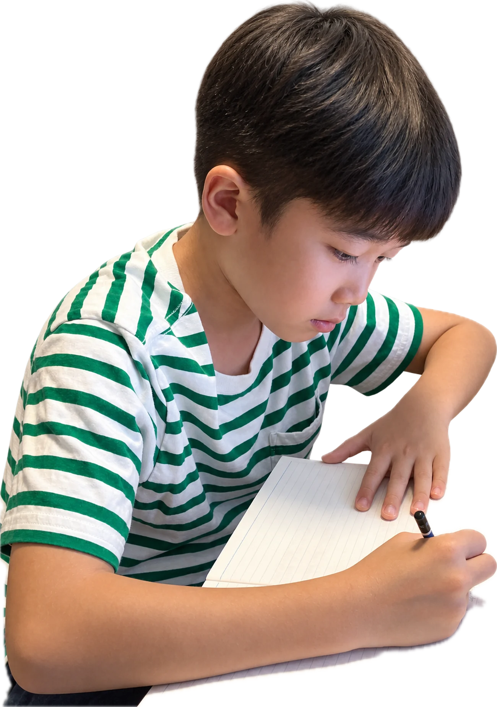
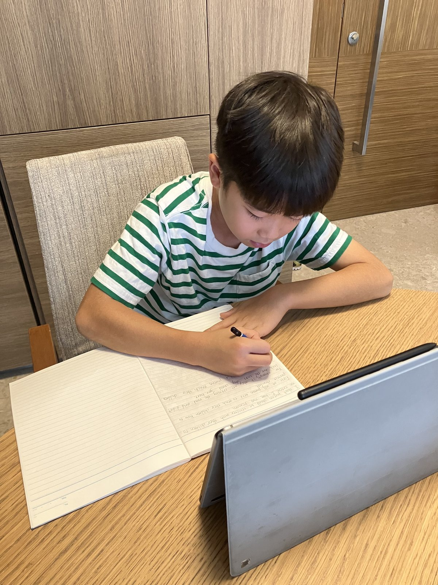
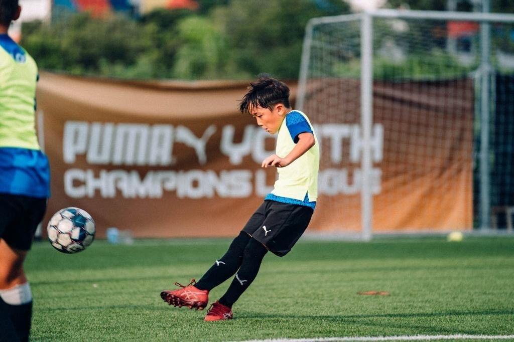
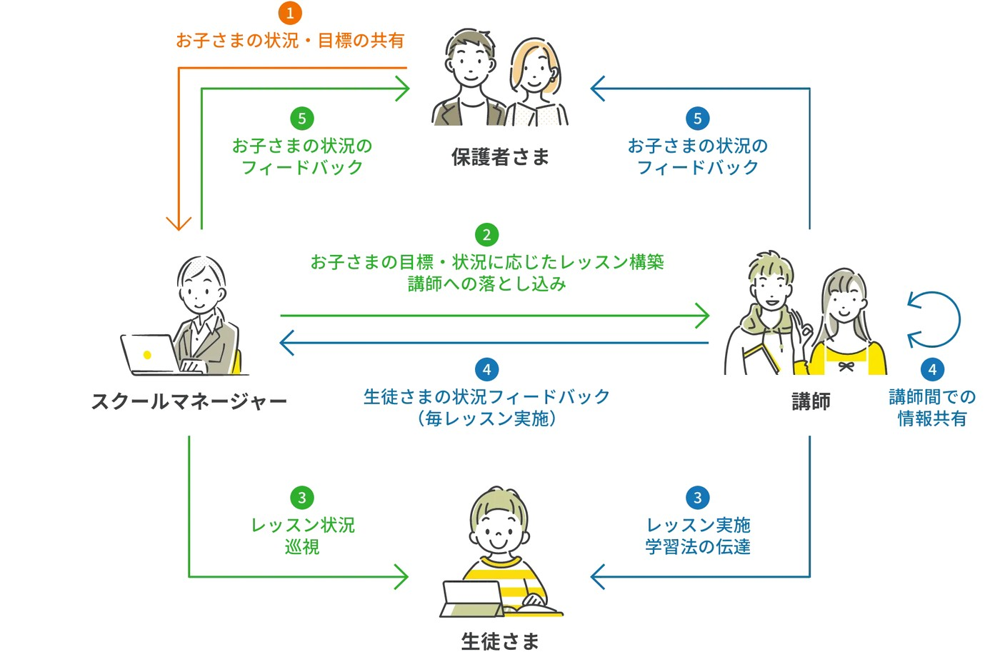
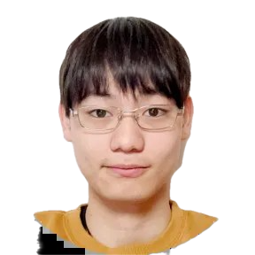
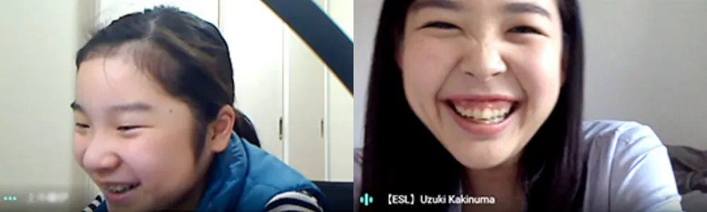

2015年の開塾以降”英検に特化”してきたからできる
無料体験レッスンはこちら→ いつまでに2級合格できるかレッスン後にご案内します
（ POINT 01 ）
2023年度第2回の実績（ESL clubオンライン校）／受験者のうち1次・2次受験双方に合格した生徒の割合
累計1,000名以上を合格に導いた英検ベースのカリキュラム
ESL clubでは2015年の開塾以降、英検をカリキュラムに用いて、着実な英語力の向上と英検合格に導いてきました。国際基準であるCEFRに対応した英検を用いることで、バランスよく4技能＋語彙力を高めていきます。一般的には、英検2級が高校卒業時の到達目標とされていますが、ESL clubでは、小学生、中学生の時点での高い合格率を誇っています。
（ POINT 02 ）


目標級・時期と現在のレベルから作成する個別の学習計画
目標とする級と受験の時期、そして現在の英語レベル、学習に充てられる時間の4点から逆算して個別の学習計画を作成し、確保できる学習時間に合わせてレッスンの進め方と宿題量を設計します。学習時間そのものを増やすのではなく、限られた時間の使い方を組み立て直すため、中学受験から大学受験までの受験勉強や、部活動・他の習い事を続けながら、英検合格を目指すことができます。
（ POINT 03 ）

バイリンガル講師のマンツーマンレッスン
ESL clubでは、英検1級・TOEFL iBT95点・TOEIC900点レベル以上のバイリンガル講師のみを採用しています。年齢の近い講師との距離の近さがそのまま学習の動機づけになり、ライティングや長文読解では、その場で日本語に切り替えて解説します。必要な時に日本語で補えるため、疑問をその場で解消し、1回のレッスンで進める量を最大化できます。
レッスンの様子
小3男子 初学者ハシモトカズマくん
小4女子 学習経験者オオツカキサちゃん
（ POINT 04 ）

計画の実行をフォローするスクールマネージャー
スクールマネージャーが中心となり、学習計画どおりにレッスンが進むよう講師へ内容を伝達し、生徒様の進捗をレッスンごとに保護者様へ共有します。保護者様が学習内容を把握したり、レッスンに付き添っていただく必要はありません。お忙しいご家庭でも安心してお任せいただけます。
オンライン校スクールマネジャー
梶 玲菜英語学習指導歴 7年
みなさんにとっての、『英語』って何でしょうか？私にとっての『英語』とは、子どもたちの世界や視野を広げてくれるツールだと思います。
将来の進路や、夢・目標を叶えられる場所や可能性がグーンと増やせるからです。
英語は、子どもたちと世界の架け橋となり、とにかく新しい気づきを与え続けてくれます。例えば、文化の違い、見たこともない景色、日本では会えない人との出会い。この気づきは子どもたちにとって、「違うって面白い」「もっと知りたい」という探求の原動力になります。
こうした探求の原動力を刺激し引き出しながら、子どもたちの可能性を英語で広げ、わくわくする気持ちを育んであげたい。そのためにもオンライン校では、楽しく、着実に実力に繋がるよう、一人ひとりの得意・不得意に柔軟に、カリキュラムを組みレッスンを行っています。
まずは土台となる、一生モノの英語力を身に付けて、世界を広げる準備を一緒に始めませんか？みなさんと、英語とどんな将来を描いているのか、お話しできる日を楽しみにしています。
オンライン校スクールマネジャー
楠山 理紀英語学習指導歴 5年
英語は、何のために身につけるものか、人それぞれで、どれも正解だと思います。
ただ、その中で、何か一つ楽しい理由を持って欲しいと思っております。
洋画を、吹き替え・字幕なしで見たい。海外のYouTuberを、翻訳されるのを待たないで見れるようになりたい。将来外車を買うときに、マニュアルが全部英語でもへっちゃらになりたい。英語の習得は、時には難しく、辛いときもあるでしょう。でもその先に、趣味的な意味でも楽しい未来が待っていて欲しい。
英語は、勉強として身につけるのだけではなく、自分の人生を楽しくするためにも身につけて欲しい。そして、ゴールだけでなく、その過程も楽しくしてあげたい、というのが私の願いです。
是非、私やESL clubの講師と接してみて、英語ができたら、なにが楽しいんだろう？と問いかけてみてください。多種多様な答えが返ってきますので、これだ！と思えるもの見つけ出すのも、英語学習の一環としてみてはいかがでしょうか。
BILINGUAL TEACHERA.M.先生
英語を学ぶことで様々な価値観に触れ、これまで以上に広い世界が見えてきます。思いがけない挑戦をするきっかけにもなるかもしれません！英語を使って未来の可能性を広げる楽しさを知ってもらえたら嬉しいです。

BILINGUAL TEACHERK.N.先生
英語は、異なる国の多様な価値観を持った人々と対話をするためのツールであり、あなたの可能性を広げる武器となり、自信となります。言語学習を通してみなさんに世界を見ることができる人になってもらいたいです。
BILINGUAL TEACHERA.M.先生
英語話者は世界中にいるため、英語が話せればどこへ行っても自分の思いを伝えられます。それはとても心強く、自信にもつながります。皆さんも英語を通じて様々な文化と出会い、自身の可能性を広げてみましょう！

Aさん（小4）のお父さま
ESL clubによる毎日の取り組みにより勉強習慣が身につきました。毎日やることによる継続力、単語テストを通じて得た自信、結果として残った英検準2級の合格が本人の成功体験へと繋がったかと思います。その小さな積み重ねののちに他教科への好影響へと波及していきました。
授業においては講師の皆様には常に優しく接していただき、毎回「楽しかった」と言っておりました。特にナヒョン先生のことは好きなようで、始まる前に「今日はナヒョン先生かな、たくさん話したいな」といつもウキウキしておりました。中学受験前、最後のレッスンを終えた後も「いつESL clubで再会できるかな、宿題を毎日するのは嫌だけど（笑）、ナヒョン先生とはずっと話したいのにな」とも言っておりました。「人生迷った時があったら、自分が幸せになれる方を選んでね」という言葉も昨日いただき「私はそうするんだ」と響いているようです。
講師からのコメント
素敵なお言葉をいただき、ありがとうございます。私は海外の医学部で学んだ経験から、「勉強を頑張ること」の喜びと同時に、その大変さも身をもって知っています。だからこそ、ESL clubでは、生徒さん一人ひとりにとって学ぶことが負担ではなく、人生を豊かにする喜びであってほしいと願いながら、日々の授業に向き合っています。
努力は大切ですが、頑張り続けることだけが正解ではありません。人生にはさまざまな選択や遠回りがあります。私自身、「なぜ生きるのか」を考え続けた結果、30代になってたどり着いた答えはとてもシンプルでした。それは、幸せになることです。
ESL clubの生徒さんたちには、「自分が幸せになること」をコンパスにして、これからの人生を歩んでほしいと考えています。その想いは、Aさんの最後の授業でもお伝えしました。そしてこれは、子どもたちだけでなく、私たち大人にも当てはまることだと思っています。子どもは、大人や先生の背中を見て学ぶからこそ、私は「幸せに向かって生きる姿」を示す存在でありたいと考えています。ESL clubの授業では、英語を学ぶことそのものを楽しみながら、その英語を通して自分の人生をより幸せなものにする力を育んでほしいと、心から願っています。

Tくん（小6）のお母さま
3級合格の目標達成ありがとうございます！本人も、『やっぱりESL clubスゴい！』と言っていて、ESLさんの力を肌で実感しているようです！ここまで、モチベーションも保ちつつ継続して学習に取り組め、尚且つ結果もしっかり導いて下さっており、本当にESLさんの力を私も実感させて頂いております。梶さんはじめ、ESLのスタッフの皆さん、講師の先生方のおかげです！感謝の気持ちでいっぱいです。
本人の発言など聞いていると、ESLさんをとても信頼していると感じており、本人の力を引き出して下さっている雰囲気、環境作りもスゴいなと感じています。本当にありがとうございます！
東京学芸大学附属国際中等教育学校
広尾学園中学校
渋谷教育学園渋谷中学校
開智学園日本橋中学校
サレジアン国際中学校
文化学園杉並中学校
※一部
講師
英検1級以上のバイリンガル
バイリンガル
バイリンガル
レッスン形式
マンツーマン
マンツーマン
グループ
日々の保護者のフォロー
ほぼ不要
定期面談あり
必要
必要
カリキュラム
目標とレベルに応じて一人一人個別に作成
画一的
画一的
英語力が伸びる宿題設計
あり
なし
なし
英検対策
5級から1級まで1次試験・面接の指導が可能
5級から準2級までは可能
4級から準2級までは可能
受験・編入対策
インターナショナルスクール入学・編入から、中学・高校・大学受験まで相談可能
不可
不可

Tel.03-3797-3380
週1回月4回
58,300円（税込）
週2回月8回
85,800円（税込）
週3回月12回
113,300円（税込）
火〜金
土
月・日
休校
ESL club 渋谷校 スクールマネジャー
杉舘 皆華
私は、英検は子どもたちの成長を確認するための一つの「通過点」だと考えています。もちろん、英検合格は大きな目標です。しかし、私が本当に大切にしたいのは、その過程で身につく英語力や、目標に向かって努力する経験です。
これまで子どもたちと向き合う中で、結果だけでなく、その過程で得られる経験や自信こそが、その後の成長を支える大切な財産になることを実感してきました。
英検の学習を通して、英語力だけでなく、挑戦する力や継続する力も身につけていきます。そして、「できた」という成功体験の積み重ねが、自信となって次の一歩を後押ししてくれます。
私は、子どもたちには自分でも気付いていない大きな可能性があると信じています。その可能性を引き出し、一人ひとりが自信を持って成長していけるよう支えていくことが私の役割です。
英語を学ぶことが、生徒様の未来の選択肢を広げるきっかけとなるよう、ESL club渋谷校スタッフ一同、全力でサポートしてまいります。みなさまとお会いできることを心より楽しみにしております。

バイリンガル講師の個別レッスン指導をオンラインでも受講できます。シャドーイングやエッセイライティングの指導といったバイリンガルによる個別指導だからこそのレッスンはもちろん、生徒一人ひとりに合わせた学習プランのご提案まで、教室と全く同じサービスをご提供いたします。
週1回月4回
33,000円（税込）
週2回月8回
52,800円（税込）
週3回月12回
79,200円（税込）
火〜金
土
月・日
休校